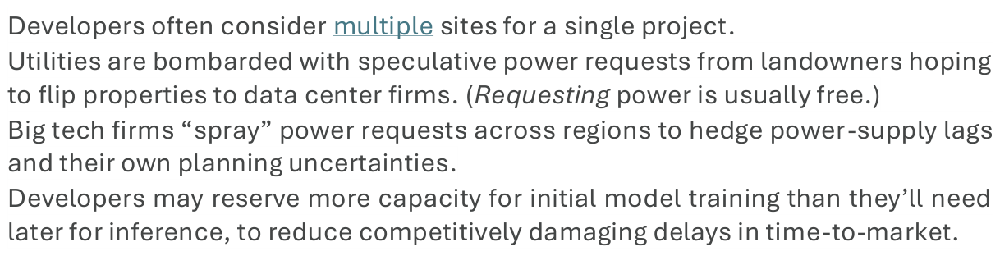
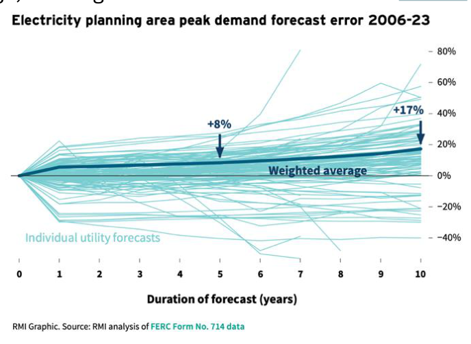

Artificial Intelligence Meets Natural Stupidity: Managing the Risks
Amory B. Lovins
10 May 2025
Copyright © 2025 by Lovins Associates LLC. All rights reserved.
Abstract
Future electricity needs for artificial intelligence (AI) are wildly uncertain—shaped by unproven concepts, disputed performance, limited trust, volatile markets, unpredictable adoption, and technical efficiency that quadruples roughly each year. Yet a speculative surge is driving massive investment in data centers and new electricity supplies, risking a 12-figure overbuild. Avoiding an electricity bubble requires clear-eyed analysis, disciplined planning, and using markets to allocate risks fairly to potential beneficiaries.
A cautionary history: In 1999, the US coal industry claimed that information technology would need half the nation’s electricity by 2020, so a strong economy required far more coal-fired power stations. Such claims were spectacularly wrong but widely believed, even by top officials. Hundreds of unneeded power plants were built, hurting investors. Despite that costly lesson, similar dynamics are now unfolding again.
In 2023–24, artificial intelligence (AI) was suddenly hailed as the vital foundation of the next economy. Big Tech giants, aided by 36 states’ subsidies, are investing a trillion dollars in data centers for AI services. Forecasted electricity use soared, but actual national use hasn’t. In 2023, US grid electricity fell; in 2024 it rose 2%, the fourth-fastest rate in the past decade, as data centers’ share (little from AI) crept up from 4.4% to 4.5%. Electricity growth was real in a few hotspots, but was widely misreported as a national trend. Worldwide, only about 5% of 2024 electricity growth powered new data centers; 5–10% is expected to 2030.
The known unknowables about markets for AI and AI’s need for power may create a new electricity bubble with hundreds of billions of dollars of overbuilding. Hundreds of new data centers, each drawing the power of a small city, have been proposed, but many will never be built, and not all built are certain to thrive.
Nonetheless, in the name of powering them, a US energy emergency was declared to speed, favor, and further subsidize rapid expansion of gas, coal, and nuclear plants already rejected in the marketplace; the emergency is apparently that they can’t compete. They’re also far too slow: gas turbines are sold out for 6+ years, and nuclear annual global net capacity additions now match just two days of renewable growth. The market winners—solar, wind, and storage—are adding 93% of new US and 95% of world capacity in 2025, but are officially dismissed (along with efficient and timely use) as unreliable, even as the Pentagon’s critical missions deploy them and private industry selects them for the most critical applications, including data centers. New federal rules are also stalling queued-up renewables and storage totaling more than total US generating capacity. They’re ready to go, and far faster and cheaper than the favored options.
A grounded view of AI’s status and prospects can help policymakers and investors avoid repeating past mistakes. The International Energy Agency expects renewables to raise world electricity supply 10–20 times more than data centers raise demand. Even lower AI-driven demand would free more renewables to displace fossil fuels sooner. However, an offsetting risk is little-noticed: AI’s most valuable technical uses include finding and extracting more oil and gas at lower cost. If AI boosts fossil fuel production more than it saves energy economy-wide, it could worsen emission threats. This hidden dynamic needs urgent scrutiny.
In the electricity sector, especially around emerging data hubs, AI growth poses risks including unreliable grids and load forecasts, stranded assets, weakened utility finances and credit, and cost burdens unfairly shifted onto other electricity users. State-level utility regulators can manage this by requiring developers to guarantee power payments, backed by bonds or insurance that can market-price the risk of default.
In the near term, smarter grid strategies can support data center growth without overbuilding. These include improving demand flexibility, enabling other users’ efficiency gains, and co-locating new data centers with clean energy at underused gas plants. Just those “Power Couples,” combining clean supply with flexible demand, can deliver fast, cheap, clean, reliable power to support AI progress on a solid foundation.
As AI evolves, the stakes for energy policy are high. Lost bets on electricity demand could waste major investments, lock in unneeded fuel infrastructure, and derail health and environmental progress. But disciplined foresight can support innovation while avoiding previous errors. Smart regulation, accurate risk pricing and allocation, and market-led investment in proven, least-cost solutions can ensure that the AI era advances not just technological progress but also resilience, economic stability, and global responsibility.
Data centers are giant computing centers, built mainly in certain parts of the United States. They now use about 4–5% of US and 1½% of global electricity. About a fourth of their usage supports artificial intelligence (AI) tools and activities. In the rest of this decade, data centers could plausibly account for about a fourth of electricity’s total US growth, but that fraction is often projected to reach half to three-fourths, and the International Energy Agency in April 2025 projected 62% (2023–30). Such rapid growth could create big financial risks for utilities and customers. If a data center is built, or planned but not built, or built but can’t succeed and pay its bills, its power supply can impose huge costs on others. Managing those financial risks needs special rules, including a new one suggested below. Contradicting most media coverage, this synthesis supports three main findings:
• AI’s electricity needs have limited and highly uncertain growth prospects, and even if large, are a much smaller part of potential total national or global electricity growth than of its public and private financial risks, especially near data hubs; and • AI data centers are best paired with renewables—especially quick-to-scale solar power, which has proven quick, reliable, secure, competitive, and effective; but • AI is being hyped and officially posited to justify more gas, coal, and nuclear power —all unneeded, uncompetitive, and likely to raise everyone’s costs and risks. Excessive electricity demand forecasts Widespread forecasts that data centers will cause half or even three-fourths of electricity’s demand growth to or past 2030 extrapolate from specific localities with extraordinarily concentrated data centers, like Northern Virginia’s world-leading “Data Center Alley.” Claims from 2019 that this area’s two counties originate or receive 70% of US or global Internet traffic appear to be untrue; nobody knows. But encouraged by state tax breaks just extended to 2035, the Alley does have 150+ large data centers, and it reports contracts for new data centers drawing 40 GW (40 billion watts) of electricity—~8× its current data-center load, and nearly half the total peak load of Texas. Data centers reportedly used a fourth of Virginia’s total 2023 electricity, and over a tenth in six states. Unconstrained growth, mainly for data centers, could nearly triple Virginia’s total electricity use by 2040. Other hotspots in Georgia, Texas (with its own ~40-GW projection), Ohio, Oregon, North Dakota, Nevada, Arizona, etc., seek to exploit some combination of state subsidies, cheap power, discounted utility rates, and compliant regulation. The US Department of Energy has also offered 16 AI sites on DOE land, and US Army land is likely; neither needs nuclear licensing, so DOE is expected to propose such siting to bypass the Nuclear Regulatory Commission. Much of AI-long localities’ data-center-driven electricity demand growth is self-inflicted by:
• 36 states’ taxpayer subsidies for new private data centers (though many of those incentives are now opposed and some are being reconsidered); • opportunity-seeking, revenue-enhancing utility promotion, recruitment, and deals;
• an apparently common tendency, as a Harvard Law study found, to try to transfer part of data centers’ electricity costs to existing customers, often using undisclosed “proprietary” data to sidestep legally required transparent utility regulation; and • misunderstood complexities of estimating rapidly evolving data-center loads: for example, forecasters rarely know when AI models will pivot from energy-intensive training mode to far lighter, sporadic, but very protracted inference mode. Trillion-dollar tech firms have proven as adept as many other industries in playing off their suppliers and communities against each other to win billion-dollar tax breaks and other concessions. Colorado’s biggest utility, for example, offers data centers a 3¢/kWh “economic development” discount—lost revenue made up by other customers—for 10 years, now proposed to stretch to 25 years for ≤40-MW projects (now 20). Tech firms don’t need the money: the Magnificent Seven in March 2025 had nearly five times the market capitalization of America’s hundred biggest shareholder-owned utilities combined. The International Energy Agency (IEA) estimates that AI-related companies, broadly defined, had gained ~$12 trillion in market capitalization (November 2022 through 2024), equivalent to about one-fourth of the total value or three-fourths of the rise in value of America’s 500 most valuable companies. Data centers would come anyway; owners simply hope to be paid extra for promising local jobs. Data-center jobs are proving costly and often illusory, but the reallocated costs to local communities are real and persistent, and they’re not all financial. Common issues include water, land, noise, emissions, and public health, with some estimates of health costs soon rivaling those of the largest states’ on-road emissions. States eager for tax revenue from data centers often deflect or block bipartisan legislation to address constituents’ concerns—as in Virginia, where an independent state study found household electric bills could rise $14–37/month by 2040, excluding inflation, for reasons related to AI; a 15% rise, averaging $22/month, is already proposed, ostensibly for other reasons. (Market power is also alleged to be potentially abused.) Adding huge new loads to antiquated and stressed power grids may also be degrading power quality and reliability for all customers. We’ll exclude here the volatile and unknowable potential power demand from mining Bitcoin and similar cryptocurrency. This product has no significant legitimate use, seems driven by financial speculation and political conflicts-of-interest, and has sound low-energy substitutes. The US Department of Energy estimates that cryptocurrency mining used ~0.6–2.3% of US electricity in 2024. For comparison, another load similarly sensitive to electricity prices, indoor cannabis cultivation, used ~1%, displaceable by outdoor growing. In Texas, which counts “prospective” loads and lacks crypto-mining restrictions like those in Amsterdam and China, the ERCOT power pool by February 2025 had received requests to serve a staggering 99 GW of new loads, more than doubling the 41 GW of requests pending a year earlier. Each GW is roughly the capacity of a very large power station. These requests come from big new users like data centers (41 GW), cryptocurrency miners (8 GW), and hydrogen and industrial (31 GW). ERCOT now predicts 73% growth from its record peak load of 85.5 GW in August 2023 to 148 GW in 2030. Such huge capacity additions are a 12-figure bet—mostly on merchant generators’ voluntary behalf, sometimes on utility or coop customers’ involuntary behalf—that those vast new loads will arrive, remain, thrive, and pay, long after the power plant and grid have been financed and built. An obvious way to free up capacity for data centers would be to fix other loads’ inefficiency, notably the unor poorly-insulated, drafty, resistance-heated buildings that crashed ERCOT’s grid in 2021’s Winter Storm Uri. However, Texas policy tends to favor expanded supply without competing it against efficient use, so ERCOT’s forecast assumes only unchanged and unimpressive 2018–22 rates of efficiency gain, despite the state’s vast potential savings. Even in the US, as we’ll see below, signals of AI-driven electricity demand growth have scarcely yet emerged from the noise. AI is estimated to use only 8% of 2023 or 11% of 2025 global data-center power, which in turn totaled only about 1.5% of global electricity use. Since the world’s 2023 data centers used about 41 average GW but the AI part was only about 3.3 GW, the new AI processors installed worldwide in 2023 added only ~0.04% to direct electricity use (not counting perhaps an eighth as much in embodied energy to make the equipment) and ~0.01% to carbon emissions. IEA estimated in April 2025 that training all large AI models since 2020 had used on the order of 0.001% of global electricity or 0.1% of global data-center electricity. However, dramatic ambition for future growth, like the 441% global increase in world data-center loads envisaged for 2023–30 by McKinsey or the 362-GW increase projected for 2035 by BNEF, brings the risk of incurring substantial impacts and costs without gaining expected benefits. This risk is most acute for electricity suppliers and users, especially in areas with many data centers, so we’ll focus there. The three main US credit-rating agencies warned in 2024 that despite potentially “strong benefit potential” to utilities building new supplies to power data centers, “the potential for inaccurate load increase forecasts” could create
…substantial credit risk….Actual loads may turn out to be significantly lower than announced loads because of technological changes and efficiency improvements that lower the power requirement for data centers….[exacerbating] long-standing challenges…in forecasting power supply needs….[T]he risk of overbuilding is most acute for utilities that are short on power or at capacity to serve existing demand. Omitting special ratemaking precautions for billion-watt (GW-scale) new loads thus creates “a considerable risk that residential [and other non-data-center] customers may end up paying disproportionately” for possibly unneeded utility investments, such as the $3b of new fossil-fueled power plants just greenlit in Georgia and the same in Louisiana, and many utilities’ costs of data-center-linked transmission expansions. (Data centers are driving 80% of Georgia’s surge in projected power sales to 2028—a prospect that five tech companies challenged in 2024.) So what is that power-plant-and-grid overbuilding risk, especially for proposed data centers, and how can it be managed thoughtfully, prudently, and fairly?
Unknowable electricity demand Growth in AI data centers’ electricity use depends on growth in AI services—whose uncertainties we’ll discuss below—times how much electricity each unit of service will need, which in turn is the product of many highly uncertain terms. All these uncertainties multiply into what Google’s head of clean energy calls “incredible uncertainty.” Thus the same analyst who wrote that data centers account for about 75% of most forecasts’ electricity growth to 2030–35 was asking within days “whether the data center boom is done before it even truly started.” The scary part is that nobody knows, so speculation fills the void. The many-layered uncertainties in data centers’ electricity needs may well compound to severalfold just in this decade, while the major expansion is happening. (Amazon alone plans to quintuple its data centers’ IT power, 13% of the US operating total, by adding 12 GW.) More than 2× uncertainty to 2030 is estimated by the utilities’ think-tank EPRI, 4× by consultancy Wood Mackenzie, 5× (US, 2028) by the International Energy Agency (IEA) or 2.4× for the world in 2035, and 7× for third-party estimates (world, 2030) cited in that IEA report. Over a few decades, compounding uncertainties could become far greater—perhaps a millionfold. For example, resistive random-access-memory analog operations have already demonstrated about a thousandfold lower energy use than modern graphic processors. In 1999, IT pioneer Bill Joy estimated a trillionfold potential gain in AI problems solved per joule of energy by ~2035, half each in hardware and software. (That approximates Koomey’s Law—computing energy efficiency doubles every ~18 months—and it’s ~10× less than the 1013× by which Hervé Touati estimates the cost of a megaflop of computing fell during 1965–2025.) In 2025, Joy’s estimate leaves about a millionfold still to go. That’s ~4× or –75% per year. Let that sink in. It means depreciation and amortization schedules—decades in the world of atoms—may shrivel in the radically faster-moving world of bits. Some costly digital assets can become obsolete about as fast as they can be built. Although data centers’ economic life is longer—better algorithms can often run on older hardware, newer servers can often plug into longer-lived data-center infrastructure, less-capable data centers can serve lower-cost needs, and older servers can be resold into secondary markets—technical dynamism roils value projections. With 12-figure investments at stake under intense time pressures, immediate uncertainties risk corporate failures and economic disruptions—especially for conventional AI power supplies that do take decades to recoup investments. Anyone building a thermal power plant paying back in 20–30 years, to run an AI data center whose energy use per inference may well drop ~75% per year, had better have a solid alternative market; otherwise it’s a bet on sustaining decades of rapid exponential growth in AI services. Without that, you could have a stranded asset, akin to a 1976 Cray-1 computer that you could later replace for less than the cost of a year’s electricity to run it ($100k at a 10¢/kWh tariff). A 2023 iPhone 15 is ~60,000× cheaper than a Cray-1, ~180,000× less energy-intensive, and ~5,000× more powerful, yet it depreciates in a few years. How about the Cray? Sure enough, NVIDIA’s CEO suggests his firm’s graphic processor products less than two years old should retire and their electricity be used instead in newer, faster ones.
Some current sources of uncertainty are obvious and calculable. Per hundred units of server energy, big data centers used to need ~100–200 units for cooling; that average fell from 150 in 2007 to 56 in 2024; now some use just ~10–15; the best use ~2. (The most advanced design methods radically improve performance in many other dimensions too.) But cooling is the easy part of the analysis. Potential savings in computers’ underlying usage and energy intensity are far larger and more obscure. AI data centers’ system-design, software, and hardware efficiencies are each uncertain by one or more orders of magnitude (factors of 10). A classic 2020 Science article showed how further efficiency gains will increasingly come from software and algorithmic progress that’s more sporadic than the past half-century of classical Moore’s Law advances in hardware, yet many multiplying kinds of efficiencies will smooth the uneven but immense and relentless overall progress. For example, NVIDIA’s head of data center product marketing said in September 2024 that in the past decade, “we’ve seen the efficiency of doing inferences in certain language models has increased effectively by 100,000 times. Do we expect that to continue? I think so: There’s lots of room for optimization.” Another NVIDIA comment reckons to have made AI inference (across more models) 45,000× more efficient since 2016, and expects orders-ofmagnitude further gains. Indeed, in 2020, NVIDIA’s Ampere chips needed 150 joules of energy per inference; in 2022, their Hopper successors needed just 15; and in 2024, their Blackwell successors needed 24 but also quintupled performance, thus using 31× less energy than Ampere per unit of performance. (Such comparisons depend on complex and wideranging assumptions, creating big discrepancies, so another expert interprets the data as up to 25× less energy and 30× better performance, multiplying to 750×.) Many advances even occur after hardware is built, like a software-driven doubling of Hopper’s efficiency after its release. Some skeptics claim a “slowdown in efficiency advancements,” but that’s not apparent. Today’s AI efficiency gains, mainly in software and system architecture, far eclipse the ~20× efficiency gain that an RMI/EDS team I co-led in 2008 found practical when redesigning a new pre-AI data center—also halving its total capital cost. Chinese startup DeepSeek seems—notwithstanding flimsy face-saving efforts to discredit it—to have demonstrated impressive AI performance in January 2025 with vastly smaller computing resources, especially in using NVIDIA’s costly and export-restricted advanced chips. By some accounts, DeepSeek’s incremental but systematic published improvements could reduce its open-source AI engine’s traditional training energy use by 90–95%. However, inference may be more important and use more energy (but perhaps yield better or at least longer answers). Such comparisons are complex and difficult. The result is murky, increasing already capacious fuzziness. Further savings from more-flexible operations Two other major opportunities arise from implementing flexible and intelligent demand response for digital infrastructure, often called “right-timing,” “carbon-aware computing,” or “grid-aware computing.” First and easiest is optimizing when data centers are used, often splitting tasks into more-flexible parts and deferring compute-heavy tasks such as AI training, batch inference, data analysis, or model distillation. Right-timing, promoted by EPRI’s DCFlex program, can avoid much new power-supply capacity, and can move parts of AI’s computing to times or places where power is cleaner, cheaper, and perhaps otherwise wasted—thus reducing curtailment and prioritizing marginal renewables. Making data centers a flexible, dispatchable load as Google pioneered (and as Bitcoin-miners earn millions by practicing in Texas), and open-source tools like the Green Software Foundation’s Carbon Aware SDK (which identified a 15%-lower carbon intensity on AI workloads), could enable utilities to power many new data centers “tomorrow” from existing assets, not in fiveplus years from costly new ones. Second, optimizing the location of compute tasks can destress constrained electrical grids, and shrink AI operations’ carbon footprint—by at least 60–73% when selecting data centers powered by cleaner energy sources. However, optimal location is often distorted by local economic incentives, designed not for optimal performance but to stimulate specific economies. This can overconcentrate electric loads, stressing some grids. Both time- and location-based adaptability offer promising pathways to transform data centers from electricity liabilities into grid and regional assets. By aligning compute demand with cleaner energy availability—whether by time-shifting workloads or siting them in regions with surplus renewables—data centers can support grid resilience, reduce carbon intensity and other impacts, save infrastructure, and cut cost, if not distorted by shortterm economic incentives such as local tax breaks. A more balanced approach would weigh economic benefits with local grids’ ability to sustainably support big new loads. Flexible data-center loads cost far less to serve than steady ones, and could get supplied far sooner—buying critical and valuable time while long-term capacity solutions are developed. Powerful tools for flexible data-center operations are rapidly evolving. A February 2025 assessment of data centers’ “flexiwatt” potential added major new methods, virtually costless and often invisible to users, that could probably make existing power plants and grids sufficient to run all US data centers proposed for this decade. That would buy precious time to start resolving other uncertainties and reducing dangerous risks. This innovation suite, obvious in hindsight and consistent with IEA (p 100), is too new for industry reactions (though informally Google’s rivals are leery), but it could substantially expand the large solution space for “hyperscalers” whose giant projects highly value speed-to-market. For that benefit, they could modestly trim their loads in a few predictable hours per year. Shifting computing tasks to times and places with lower grid demand and cleaner supply offers major economic and operational advantages. Adjusting when and where power is used can help spread fixed infrastructure costs over a broader base without raising peak demand, ultimately lowering electricity prices for everyone. The whole US grid (not just data centers) could unlock nearly 200 GW of cost-effective load flexibility by 2030—20% of peak demand, saving over $15 billion annually in avoided system costs. Controlling the timing of just two common residential appliances could cut peak demand by 8% and cut infrastructure investment needs by up to 15% through 2030. Either of those opportunities could meet all US data-center growth without using data centers’ new flexiwatt potential. Will AI increase or decrease energy use and carbon emissions? Importantly, too, a major AI selling point—all the electricity AI can save by raising the efficiency or timeliness of the ~98% of global electricity use that is not for AI—must be subtracted from the total demand forecasts. That’s why Bill Gates says AI could actually reduce global energy demand. As a small and simple illustration, a better building-energymanagement system cut a Kansas innovation campus’s energy use by 16% with a two-year payback. Buildings use nearly three-fourths of US electricity, so if that result scaled (or more), it would entirely offset all US data centers’ electricity use, before counting any AIinduced savings in industry or mobility. Those can be large too, including migrating complex calculations from traditional computers to more-efficient AI platforms. Consultancies EY, Accenture, and PwC/Microsoft therefore claim that AI hypothetically could reduce global greenhouse-gas emissions by 1.5–4% while boosting global GDP by several percent, though those benefits are often calculated by different and incommensurate means. In April 2025, the IEA estimated potential savings around 5% in 2035 (Chs. 3–4), but noted (pp 205, 252) that “such AI adoption is not guaranteed and could be negated by rebound effects and increased consumption of fossil fuels induced by AI-enabled lower prices.” In other words, AI’s potential but mostly speculative and noncomparable energy benefits, such as greater energy efficiency and cheaper renewable power, must also be compared with the indirect impacts of rising demand for energy-intensive AI services, faster hardware turnover (with more embodied energy), and especially accelerating polluting activities like finding and extracting fossil hydrocarbons—one of AI’s biggest uses. In one important case, AI could help raise hydrocarbon reserves 5% and yields 10–20% while cutting costs 8–20%, or even 30% for new shale wells. (IEA estimates up to 10% lower cost for deepwater offshore). Extra emissions—“enabled impacts”—from burning otherwise unavailable or uncompetitive fossil fuels could then far exceed emissions avoided by more-efficient data centers, making the AI “game-changing” in the wrong direction. IEA’s major April 2025 AI report (pp. 246–252) agrees that widespread gross emission reductions are possible but “but not on track to materialise without regulatory and other interventions,” so reductions could be smaller than the emissions added by AI’s making fossil-fuel reserves bigger and cheaper (applying modest price elasticities to retail petroleum-product prices). Thus “the upper bound of the rise in emissions from…rebound effects…remains uncertain.” History might suggest higher confidence in realizing AI applications in the hypercompetitive fossil-fuel industries than in emission reductions spread across all other sectors. That imbalance may tip realized results toward net harm. That needs urgent clarification. Cheaper and more-accessible AI is meant to fuel a feedback loop of consumption across sectors like logistics, education, and marketing. Focusing just on short-term savings in direct emissions ignores how slower behavioral and market responses can erase efficiency gains. Will AI really save more energy than its operations consume and its use to extract more fossil fuel enables? It may not. No one knows, and only a few are asking. Real exploration of AI’s complex net energy and environmental effects has barely begun. But if AI doesn’t save lots of net energy and cost, why build it? Just making prettier pictures isn’t worth a trillion dollars. Making more artful deepfakes is worth less than zero. Timely, clean, affordable, reliable, secure electricity However much electricity AI may ultimately save or shift, its operation does use a lot of electricity. Where will that power come from? The AI industry’s biggest challenge isn’t finding executives and investors willing to bet astronomical sums that aggressive scaleup will solve its problems, conjure its markets, and ensure its business success. Rather, it’s finding enough electricity, soon enough, to run scores, then hundreds, of planned new hyperscale data centers—each ~10–100× bigger than traditional ones, each about as powerhungry as a small city, and each costing typically $10–20+ billion to build and equip, plus a similar sum over the years for electricity to run it at the 2–3×-market price some eager data-center developers now offer. IEA estimates that powering global data-center growth will need $0.5 trillion of investment in the next five years (11% of base-case data-center investment)—nearly half of it in the US, or over 15% of total projected power-sector capital expenditures. Few renewable developers are rich enough to finance such big projects’ power supplies on their own. Huge balance sheets let Big Tech contract for long-term power and make renewable projects bankable. The same financial strength could also confer the market power to squeeze renewable developers’ profits, but so far, renewables’ faster, often ready-to-connect offerings have helped support their profit margins. Many pathologies amplify forecasting risks. Even as the world’s largest tech companies invest hundreds of billions in new data centers amid an AI-led arms race, there is broad consensus that most AI projects requesting power will never come to fruition:
• Developers often consider multiple sites for a single project. • Utilities are bombarded with speculative power requests from landowners hoping to flip properties to data center firms. (Requesting power is usually free.) • Big tech firms “spray” power requests across regions to hedge power-supply lags and their own planning uncertainties. • Developers may reserve more capacity for initial model training than they’ll need later for inference, to reduce competitively damaging delays in time-to-market. For these and other reasons, Microsoft’s former VP of Energy said, “Utilities are fielding hundreds of requests for huge amount of power, but only a fraction of that demand will ultimately be realized. AEP, one of the largest US electric utility companies, has reportedly received 80–90…GW of load requests. Only 15 GW of that is likely real because many of the AI projects…will never actually see the light of day.” Such confounding factors, often overlooked in influential power forecasts, pile on top of the multiplying layers of uncertainty from underlying AI markets, computational and energy efficiencies, and load flexibility, all raising power suppliers’ risks. They can also bias industry toward higher forecasts.

Many utilities keep wanting to build familiar fossil-fueled power plants, often to earn a fat return on investment and pass through all costs. Those plants tend to take far longer to build than data centers, so their capital must be committed before the data center is confirmed as real. To manage risks from mismatched lead times, turbulent markets, and fossil plants’ generally higher costs and emissions, US Big Tech firms have commendably bought ~40 GW of renewables for their data centers, and seek far more. But all users must struggle with the grid interconnection queue, where at the end of 2023, 1,452 GW of renewables and 1,028 GW of storage—together more than twice total US generating capacity (1,189 GW)—languished for an average of five years and rising. These blocked resources are more than would be needed to approach zero-carbon US electricity, and they validate this goal’s attractive economics. But applicants’ patience may not even be rewarded: clean supply may be preempted by the queue-jumping just adopted by the 13-jurisdiction PJM power pool (spooked by 15 GW of new big load requests) for 50 power projects prioritized on size rather than speed. This choice advantaged costlier and slower gas plants (3% of the national queue), too slow to help meet the stated need, over cheaper and faster renewables that could. That’s unfair, imprudent, counterproductive, but apparently permissible. New Midwest and Federal policy apparently aims to encourage it, overturning market choices. Such inferior solutions seem unnecessary if renewables are properly understood and implemented. Powering a data center with a solar/wind/storage installation sited near an already-interconnected power plant (such as a rarely used peaker or cycling combined-cycle gas unit) can neatly and profitably satisfy all the conflicting goals. This smart layout, which RMI calls a “Power Couple,” helps data centers run almost entirely on local renewables, as Portugal’s Sines 4.0 data center does, now hyperscaling toward 1.2 GW. Apple operates all-renewably-powered data centers in four states plus China. Google, TPG Rise Climate, Intersect Power, and others plan more renewable data centers. Anyone who thinks renewables can’t do such demanding jobs is underinformed. Australia’s largest electricity user, mining giant Rio Tinto, just chose 2.7 GW of wind and solar, backed by 0.6+ GW of batteries, to launch the cheapest and most reliable solution to repower its Gladstone aluminum-smelting complex. (Now it’s shopping for the last 20% of its energy and 70% of its firming.) The world’s largest solar steel mill, sustaining 1,000+ jobs in Pueblo, Colorado, is nearly all powered by EVRAZ’s 300-MW PV plant. Many solar power plants, including three-fifths of California’s 2024 additions, are hybrids whose batteries are more reliable than thermal power. At least one vendor offers fully financed data-center power from PVs plus solar-thermal-electric (making electricity and cooling with 18-hour thermal storage), claiming 99.9999% reliability, 2-year lead time, and cost as low as $60/ MWh. The US Department of Defense has long led in adopting renewables and storage for its most mission-critical facilities and uses. In short, if done right, renewably powered data centers could make the grid more stable, reliable, and affordable. Some Federal policymakers instead claim that solar and windpower threaten reliability and national security, as well as increasing costs. None of those claims is consistent with the evidence. In 2023, 60 countries or territories were 50–100% powered by wind, sun, and water—12 of those
98.4–100%—while 11 US states produced 53.2–118% as much electricity from those sources as all the electricity they used. Though most benefited from grid interconnections too, their renewable shares are rapidly growing. US utility-scale generation planned to be added just in 2025 totals 63 GW—4 gas, 8 wind, 18 batteries, 33 solar. So with efficiency and flexibility potential underscoped and “bring-your-own-power” renewable potential disputed, will the US in this decade need to add 25, 50, or 100 GW to power new data centers? (Power Couples could do all three.) No one knows, but many tech leaders and politicians are accelerating into the fog, eager to spend other people’s money—even taxpayers’ money when private capital markets demur. The four biggest tech companies are each investing at least $65 billion in data centers in 2025. The proposed Stargate AI project could ultimately cost $500 billion and draw ~25 GW. Total data-center investment by 2030 could exceed $1 trillion; one consultant estimates $1.8 trillion; some industry leaders call for $1-trillion AI data-center investment per year by 2028. Those plants were just expedited by an Energy Emergency declaration explicitly premised on a supposed national-security need for a new national goal of “AI dominance.” Its biggest challenge is timely new power supplies. But for both data centers and new power supplies to run them, uncertainties create unsupportable financial risks. Steady long-term revenue must repay data-center and network investments, plus operating costs including roughly $20–80 billion in 2028 electric bills, soaring thereafter. Here we focus on the risk to those electricity investors and operators. How big is their risk? Who will ultimately bear it? Repeating irrational exuberance Data centers take ~1.5–2.5 years to build. Meeting speculative AI power demand now takes 4–6+ (7–8?) years for gas-fired power plants (often at doubled price), ~10+ for costlier nuclear plants or new transmission rights-of-way (usually displaceable in a year by advanced conductors, whose maker I advise). The longer the lead time, the greater the risk of project collapse on an epic scale. A root cause is that projections of need have risen far faster than the power industry moves: Silicon Valley’s speed doesn’t fit utilities’ and regulators’ staid pace. This basic mismatch is a serious cultural, institutional, and technical challenge. The power sector has done naïve overforecasting and overbuilding before, but has apparently learned nothing and forgotten nothing. Prof. Jason Bordoff said at Davos, “We could fill this room, and many like it, with reports from the late 1990s about how electricity demand was going to go through the roof because of the internet revolution. None of that ever happened because the technology and the chip productivity kept improving.” Here’s how:
• A 1999 campaign by the coal industry sought to create panic about how information technology, so vital to prosperity, would eat the grid without lots of new coal plants. That claim, though quickly debunked by actual data, was widely believed, even by people (like US Secretaries of Energy) who should know better but cheerfully swallowed thousands-fold errors, as Koomey’s classic textbook’s Epilogue recounts.
• In 1997–2003, independent and utility generators were deceived by an urgent-demand-growth mirage (including IT) into ordering 225+ GW of new US capacity. (Gasfired capacity added during 2000–04 totaled ~242 GW—140 GW just in 2002–03.) Most proved unnecessary, and their 12-figure investment disappointed. That’s less than the economy-shaking ~$5 trillion lost in the dot-com bubble, but it’s a big hit. Power demand took a decade or two to grow slowly into the far-overbuilt supply. • Internet usage doubled in each of many years in the 1990s, but in a few 1995–96 spikes, it doubled in just 100 days. Those anomalies got extrapolated into a media meme, triggering a stampede to overbuild optical fiber networks, with 10× growth just in 1996–2000, much of it debt-financed. In 2002, 97% of the fiber was still dark. It took a decade to start making money, vaporizing billions. A new RMI review finds that in 2006–23, US utility planners “on average overforecasted electricity demand by 8% in 5-year forecasts and by 17% in 10-year forecasts….The forecast error is even higher for more recent years: data from 2012 to 2023 shows that forecasts were, on average, 23% higher than actuals.” Here’s that bundle of forecasts:

High forecasts have just greatly accelerated. US utility electric-energy demand for 2023– 35—forecasted by 121 integrated resource plans covering 48% of delivered US electricity— averaged 7% total growth in January 2021, 9% in August 2022, 12% in December 2023, and 20% in December 2024, tripling in four years and returning to growth rates not seen since the 1980s. The biggest source of this load inflation seems to be projections of extremely rapid growth of giant data centers. Those assets combine high ambition to build, high competitive urgency, flexible siting, low load flexibility for AI inference (though bigger for AI training and for crypto), high “flight risk” that the load may later flee or default, highly concentrated risk (e.g. five firms made up 80% of projected data-center demand growth for Dominion Energy Virginia, whose prospects could be upended by just one firm’s strategic shift or business reversal), and uncertain business prospects. For the ponderous, longlead-time, high-capital-intensity electricity industry, that’s a tough customer risk profile. Is it an innocent coincidence that the sudden frenzy of media coverage of an imminent AI energy emergency, starting in 2023–24, feels like an echo of the 1999 coal-driven IT panic— only this time benefitting the methane-gas and nuclear industries, plus, perhaps, “clean, beautiful coal” now “critical” for powering AI growth (though grossly uneconomic)? I have no idea whether there’s actually such a coordinated stealth campaign, and we may never know. But we do know how the 1997–2003 electricity-shortage frenzy worked out: not well. Through 2018, IT's forecasted electricity demand growth fizzled as data centers’ global efficiency almost entirely offset the 550% growth in computing services, so their electricity use rose just 6%. Data-center electricity then began drifting up—slowly. Claims that computing and the Internet would use half the nation’s electricity by 2020 turned out to be wild fantasies: even in 2024, their growth was scarcely visible. Here’s a closer look: In 2023, data centers used just 4.4% of US electricity, up from 1.9% in 2018. But in 2022– 23, total US electricity use fell by 1.7%. Adjusting that raw datum for weather-normalization and behind-the-meter solar generation still yields a 0.2% or 7 TWh/y net drop, according to analysis of USEIA data by Dr. Jonathan Koomey. Thus rising 2023 use by data centers was slightly more than offset by reduced use elsewhere. In 2024, as the preliminary March 2025 USEIA data revealed to Koomey, the decline in the electric intensity of GDP since 2014 continued, slowing slightly to 0.6%/y. Total 2024 US electricity use rose 2.6% (raw) or 2.2% (adjusted)—or a weather-normalized 2.1% (80 TWh) without the 12-TWh growth in small-scale photovoltaics, which mainly power the ordinary buildings they sit on, just 26% of them commercial buildings. Though 46 TWh or 58% of the weather-adjusted 80 TWh of 2024 growth was in the commercial sector, total usage had only the fourth-largest growth since 2014. IEA estimates US data centers used ~183 TWh in 2024—4.5% of adjusted total use and only 29 TWh above 2023 (or 0.7% of 2023 total adjusted usage). Thus so far “There is no strong evidence for explosive electricity demand growth in the United States in recent years.” Some places do forecast it locally, as in Virginia’s Data Center Alley, and most media reports trumpet it as real and huge, but what’s growing is projected future demand far more than actual present demand; local, not national or global; chiefly short-term, not ever-soaring; and IT-related, not total. Few journalists and commentators get these vital distinctions right, yet the explosive-growth narrative persists, and too often drives policy. Even globally, while total electricity demand grew in 2024 by a near-record 4.3% (7% in China), boosted by space-cooling loads one-fifth above the 2000–20 average, just ~5% of that growth came from 55 TWh or 14 nominal GW of data centers. Only a fraction ran AI. Whether or not national AI-driven growth in total electricity demand has just emerged, AIfocused utilities and merchant generators may need to relearn that the same new resources that provide the cheapest bulk power (solar, wind, grid balancing by any of ten carbon-free methods, and efficient, timely end-use to free up existing resources) win in the marketplace by even more if deployed faster. Spiking demand would not reverse but reinforce those least-cost resources’ advantage: they’re mass-produced, less dependent on scarce, slow, special hardware, and relatively fast to site, approve, and build (at least where fossil-fuel interests haven’t poisoned local politics with campaigns of deception). Thermal power stations are the opposite, widely reporting surging schedules and budgets. As a result, renewables will make ~35% of 2025 global electricity (3.8× nuclear power’s share), then add several percentage points per year. Just in 2024, renewables added roughly 585–700–730 GW, and battery storage added 181–205 GWh and 74 GW of new capacity, while nuclear power added just 4 GW more than its 3 GW retirements—a nearly-irrelevant distraction. Deloitte estimates that with aggressive efforts and ahistoric success, nuclear power, mainly from existing assets, might meet about 10% of new US data-center demand by 2035 if it proves feasible and cost-effective. What is growing explosively is local AI requests for renewable power, illustrated by leading provider NextEra’s mid-2024 renewable project backlog totaling >20 GW and its 2027 installation target of 81 GW of renewables and storage, on top of 38 GW installed by 3Q24. Where suppliers don’t install electricity storage or its cheaper grid-balancing competitors, the result may be to prolong old coal plants’ lives or add gas-fired generation. Fossil-fueled plants undercut Big Tech’s and many states’ emission and economic goals, yet ~9 GW have been or may be saved from retirement and ~11 GW more—slow, costly, financially risky—have been built to power data centers. None of those projects looks necessary or prudent, but powerful interests support and demand them to support rapid AI growth. Those interests will doubtless claim the 28 April 2025 Iberian blackout proved that only thermal power plants can keep grids stable. That’s wrong. Such events have complex multiple causes, perhaps including obsolete control settings or grid rules. Initial media reports are often incorrect and speculation is pointless, though The Wall Street Journal routinely blames blackouts on renewables regardless of actual causes. Not unusually, the Spanish grid was 64% inverter-powered at the time (Ireland is routinely >75%), but with five potential weaknesses: little or no synthetic inertia (which lets modern solar or windpower restabilize grids faster and more precisely than rotating machines can, and for which Spain pioneered authorization in 2020), no grid-forming inverters, seemingly no synchronous condensers on the mainland, ~1/80th of Texas’s batteries per GW, and—to shield French reactors from renewable competition—a French DC intertie said to be 5× smaller than the 2030 EU target. Investigation will find and fix the actual causes. Commentators swiftly blamed solar and called for more fossil and nuclear power, but both would worsen reliability. Unknowable service demand AI’s financial risks to trillion-dollar US infrastructure investments are amplified by another underlying risk seldom discussed: the uncertainties of AI’s profitable use cases, hence of its long-run revenues. Nobody understands the fundamental long-term demand for AI’s services. Many look like a solution in search of a problem, a hammer looking for nails, an abstract capability without a winning practical application. How many users will be willing to buy how many of what kinds of AI services, for how long, and at what price is sheer guesswork; it can’t be divined from rapid initial uptake of popular free gateway apps. Political rhetoric, like calling “AI dominance” a competitive and national-security imperative, does not ensure real-world sales. Those depend on value perceived by customers. A further major source of AI risk is rethinking scale. Many users are starting to redefine the task and adapt big pretrained models to specific use cases. The resulting fit-for-purpose small models and lean datasets can rival frontier models’ performance and even surpass their reasoning ability, yet run briskly, at manyfold lower cost, with neural processors using ~0.5–5 watts, or on ordinary laptops or smartphones (my aging iPhone has more processing power than the US Strategic Air Command had when I graduated from high school). DeepSeek is an early open-source example. Microsoft’s BitNet b1.58 2B4T shrinks 2 billion parameters, trained on 4 trillion tokens, to a competitive 1.58-bit model running on a simple processor with just 400 MB of memory. Many more small tools now emerging offer impressive capabilities, using vastly less energy and no new investment. Yet Big Tech is betting a trillion dollars on its vision that making Large Language Models big enough will confer breakthrough capabilities and cross the threshold into Artificial General Intelligence, so if brute force hasn’t yet succeeded, that’s because we’re not yet using enough of it. We’re not there yet; many experts doubt we ever will be. Meanwhile, rapidly emerging distributed solutions can shrink giant data centers’ share of the already very uncertain market. The larger the investment, the greater the incentive to disrupt it. The longer it will take to pay off, the greater the “duration risk” of things going wrong. The marketplace has just obliged on both counts. In 2024, a third of all US venture investments went to AI (now exceeding 1,500 startups), and AI’s prospects boosted electricity-linked firms like Constellation, Vistra, and GE Vernova to the front of the S&P 500. But when DeepSeek pricked the bubble, those stocks instantly tanked. NVIDIA suffered the biggest one-day corporate value loss in history—$589 billion, later even more, totaling 28% by 28 March 2025 (before tariffs; 46% on 4 April). US stock markets lost more than $1 trillion in that single day. The AI bulls may ultimately prove right, but the bears have reared up and roared convincingly. AI investors are starting to realize they’ve been building an opulent castle on sand and had better check the foundations. Through March 2025, the Magnificent Seven tech firms were still worth $15 trillion, 30% of the S&P 500, but had lost 15% of their total value in two months. They then lost $1.55 trillion in the week when tariff panic wiped $6.4 trillion off the Dow in two days. Where’s that heading? As Goldman Sachs’s June 2024 paper (reinforced later) remarked with delicate menace, “[W]e still see room for the AI theme to run, either because AI starts to deliver on its promise, or because bubbles take a long time to burst.” Other sectors surfing the AI wave look wobbly too. One, echoing some prominent tech leaders’ personal preferences and investments, is especially striking. On DeepSeek Monday (27 January 2025), some nuclear-power startups lost nearly as much percentage share value as chipmaker NVIDIA; even uranium markets trembled. The startups had attracted some private investment as Big Tech offered 2–3× market prices. Meta received “over 50 qualified submissions” to help supply 1–4 GW of nuclear power for its AI data centers. Google has reportedly agreed to pay some three-site preliminary costs for a firm aiming to build 10 GW of SMRs by 2035, and to buy power from another in 2030+; neither has ever built a reactor. Nonbinding expressions of interest totaling >10 GW of “Small Modular Reactors,” which are not a thing, were also misclassed, even by Bloomberg New Energy Finance, as Power Purchase Agreements. They can later be repriced or abandoned as market verdicts arrive, having achieved their presumed aim of boosting startups’ share prices.
But awkward realities intrude. Proposed novel reactors are far too slow to power the AI surge, and they lack proven designs, Federal safety licenses, experienced vendors, shippable products, and a business case. Some owners even want to try resuscitating one unfinished and three shuttered reactors (by one owner with zero operating experience, another with $1.8b of government support), or to take existing ones off the grid to resell power to a data center (depriving other customers of the supposed “clean-and-firm” attributes for which they were lavishly subsidized). Some nuclear proposals rest on basic misconceptions, such as false claims that China and South Korea build nuclear plants cheaply and on time. Their view of the competitive landscape ignores most firmed renewables, as well as emergent advanced geothermal power, methane pyrolysis, and geological hydrogen. But AI is now firmly enthroned as the newest and sexiest of the nuclear industry’s three big talking points; the others are decarbonization and grid reliability, both of which it actually reduces. Combining two risky investment stories, nuclear and AI, each with basic weaknesses (we’ll explore AI’s below), doesn’t make them more convincing; it just turns one burstable bubble into two linked burstable bubbles. The global nuclear enterprise adds in a good year only as much net capacity (additions minus retirements) as renewables add every two days. It’s stagnant; they’re soaring. It attracts only about one-twentieth as much investment (nearly all centrally planned and state-supported) as renewables do, despite its longer, larger subsidies and policy support. Planned 2025 capacity additions are 93% renewable for the US and 95% for the world (also to 2027). Even all-renewable long-term supply is increasingly proven feasible and attractive. Renewables’ high speed and low cost have run off with the world power market. For anyone who reads the data and respects the market, it’s game over. Nuclear energy is a parasite on AI’s credibility. Pairing them makes them both less investable. Where’s the revenue? To be sure, AI does appear valuable, even transformational, in certain technical specialties, from protein folding to weather forecasting, from drug or materials discovery to image or pattern recognition and especially hydrocarbon exploration. Customers with such challenging needs can see and value AI’s advantage in expanding capability and saving time, energy, and cost. However, Bloomberg New Energy Finance (BNEF) finds widespread industrial use of generative AI “unlikely,” and concludes “these sectors have struggled to assess if the benefits are worth the risks.” Moreover, it’s hard to see such arcane uses and narrow users alone paying for AI’s immense development and infrastructure costs despite other emergent value. Astute analysts like David Cahn (Sequoia Capital, which helped launch NVIDIA) and Michael Liebreich (founder of BNEF) foresee a ~$500-billion revenue gap for each year in which AI investment grows at the autumn 2024 pace. That gap is about half Big Tech’s total current revenue. Sparse profitable applications in broad markets, even for big customers like oil majors, can’t support enough return on their trillion-plus dollars. As Cahn wrote in July 2024, “[W]e’re going to have a lot of AI factories. Whether there will be enough demand to fill them, we still don’t know yet.”
One emergent answer is to make customers’ purchases involuntary. Microsoft in 2024 annoyed millions of Office 365 users by cramming AI down on its subscribers—as a renamed product with higher prices, little or no notice, and concealed or missing options to “downgrade” (keep what you have), all to get a modest ~$3b more annual revenue. Perhaps Microsoft isn’t confident that ordinary customers want AI and will voluntarily pay for it. That empirical question could be answered without risking loss of goodwill. Google Workspace, it seems, just did a similarly opaque, sudden, and unwelcome cramdown in March 2025, adding AI features claimed to be free even as the total price of the service rose. AI also faces significant challenges in copyright (e.g., one giant firm appears to have pirated more than 80 of my books and papers), privacy, safety, cybersecurity, competition, bias, and other important legal or regulatory issues. Data-center construction may be slowed or blocked by late or deficient power supplies, lack of inputs (like transformers, turbines now sold out to 2031+, skilled builders, etc.), technical issues, local opposition, noise, environment, and community and investor disenchantment. Basic issues with AI’s main business models run even deeper, like giving away the services Big Tech wants people to pay for, or lacking pricing power in what looks increasingly like a moatless commodity business, or failing so far to demonstrate that ever-larger scaling will magically create “generalized intelligence” capabilities, prevent disturbing sycophancy, stop rookie errors, and squash fabrications. Experts dispute these issues with an intensity that may disquiet investors. Recent years have brought no significant technical breakthroughs—only scaling whose case remains unproven. Goldman Sachs’s Jim Covello, among other analysts, doesn’t see how the current $1-trillion AI investment surge can meet a $1-trillion supposed need without being able to solve extremely complex and important problems, which it isn’t designed to. Vanguard’s chief economist shares his skepticism. Alibaba’s Chairman warns of a potential bubble. Microsoft’s CEO expresses AI-hype caution, seeking to dial down market expectations. AI cloud-services firm CoreWeave’s bellwether IPO flopped, raising $1.5b (including $250M from its supplier/investor NVIDIA, plus a multi-year deal with Microsoft, which provided 62% of CoreWeave’s 2024 revenue) instead of the $4b originally hoped for (though days later it partly recovered). This muted response, Reuters noted, could “dampen sentiment towards AI infrastructure amid rising uncertainty over Big Tech’s massive spending spree and fears of competition from lower-cost options such as China’s…DeepSeek….” And a Technology Review article relays local reports that “up to 80% of China’s newly built computing resources remain unused,” overtaken by market shifts and rising skepticism. To be sure, if generative AI ultimately permeated every user interaction, the number of inferences would be astronomical, but that doesn’t ensure value, profit, or which architectures win. One data point: Some of my Stanford students who tried various modern AI offerings then chose to avoid them as superficially enticing, sometimes useful, but ultimately feeling like addictive substitutes for critical thought—dulling skills, weakening imagination, and obscuring personal creativity. These students want a tool to enable their efforts, not a usurper to supplant them and add unknowable amounts of error. I know the plural of “anecdote” is not “evidence,” but consistently seeing such mixed reactions in this capable young audience makes me more skeptical about a vast untapped consumer market for the AI tools now offered. “Killer apps” for general-market AI may emerge, but Microsoft’s CEO says they haven’t yet. So when a student asked if he could “polish” some written work with AI, I asked whether he’d like his paper graded using AI. He didn’t like that idea, for the same reason I didn’t like his idea, so we agreed that he'd submit his own unadorned work, we’d both know it was his, he’d be entirely responsible for it, we’d both forego fabrications, and he’d receive the personal guidance for which he’d paid tuition. I just told that story to my next class, and they all seemed delighted to follow the same simple rule. Analogously, Anthropic, a leading AI company, tells job applicants “please do not use AI” in their applications, so it can assess their own communication skills. Fortune reports 74% of hiring managers shun AI-generated applications, from which most are less likely to hire. As initial novelty wears off and AI gains vigorous enthusiasts and critics, many customers are already objecting to being charged for AI features they don’t need or value. Such early doubts aren’t easily reversed. Customers know they don’t need AI to find out who won the 1963 World Series; old-fashioned search engines do that now with existing cloud infrastructure, using only about a tenth as much energy and enormously less investment. Many people think, do research, hone prose, and create graphics without AI. As AI apps improve, some people will indeed find them useful, as they did with word processing and illustrating software. Such adoption may turn out to support massive growth. Yet some users will continue to see little, no, or negative value in AI’s increasingly insistent intrusions. No one can be confident how the market will split along that spectrum. Clarity may improve, though, as the next shoe drops: competitive markets respond to divergent market reactions with product differentiation. Under the selective pressure of different users’ perception of value, some vendors will offer “classic” apps that explicitly lack AI but are faster and cheaper—and then get still cheaper as the AI boom depreciates their pre-AI infrastructure even faster. AI-free products depress AI pricing and lose revenue from users not wanting AI and uses not needing AI. Attempts to bundle AI compulsorily into simpler offerings might even be challenged as illegal tied sales. Inevitably, differentiation further exposes bubbly business models. Will Big Tech firms prefer to offer their own ”classic” AI-free products alongside their shiny new AI tools, or let AI-free rivals poach their customers? One way or another, when customers don’t want a novelty, they won’t pay for it. Ask Coca-Cola, Harley Davidson (perfume), or Bic (“For Her” ballpoint pens). Quality and trust When I look up a FitchRatings report on data centers, should I be reassured to read this baffling disclaimer? “This abstract may have been generated in whole or in part using artificial intelligence and is therefore subject to error and inaccuracy, including but not limited to. Further disclaimer can be found here.” I’m glad Fitch disclosed this, but it conveys: “Don’t believe this report.” So why read it? How does AI add value to this product or enhance Fitch’s reputation? Why not have a person write the one-paragraph abstract and skip the special AI disclaimer? And if no one at Fitch asked those questions, why not? That vignette highlights many business users’ deepest concern about AI: they won’t adopt tools that seem opaquely unreliable. Trust is vital, hard to win, easy to lose, and nearly impossible to restore. Tools that fabricate and then deny they did, or claim they’ve solved a mathematical problem when they haven’t, or write buggy code and then add new bugs while fixing old ones, or may not be ripe for critical tasks in, say, medicine are too risky to stake your company on. Running a business is hard enough without untrustworthy helpers. Fierce internal disputes about whether and how to use AI are reportedly roiling many US firms. Most firms report material risks from AI but, so far, unimpressive benefits. My own use of AI is severely limited, for cause. I recently asked a major AI engine for the annual real GDP of Australia in constant Australian dollars during 2019–21. It returned numbers that “available sources indicate.” They were way wrong. Traditional search engines show reliable and citable primary sources; AI returned unsourced wrong answers. A good high-school student would do better (though Perplexity.ai would have cited its sources and limitations). Then Google’s AI earned a second strike when I asked it for various places’ recent peak electric loads in GW. I got back electric energy use (TWh) mixed with nonsense (GW/year). Such slop is worse than useless—and worryingly, firms using AI are about equally likely to check all AI outputs before using them or to check few or none. Combining ever more online data doesn’t enable a Large Language Model to understand content. It can’t. It only gets better at guessing the next word from previous words. It would work as well in Martian. Emily Bender called LLMs “stochastic parrots.” Sci-fi writer Ted Chiang called ChatGPT “autocomplete on steroids,” and its lossy compression “a blurry JPEG of all the text on the Web.” A better description than “artificial intelligence” is “imitation intelligence”—a facsimile or simulacrum. The brain-computer analogy is unsound to start with; as Jay Ogilvy says, computers don’t think and brains don’t compute. AI is also structured very differently than the human brain and uses eight orders of magnitude more energy. Yet so far, at least in Large Language Models, AI comprehends nothing; it doesn’t reason or think; it only aggregates, correlates, and recognizes and emulates patterns. Its potential to do more and better is tantalizing, but its ultimate value remains speculative. The persistent, rising, apparently permanent risks of fabrication (the new industry term for hallucination) and misunderstanding are precursors and special cases of a graver risk: that recursive training on and regurgitation of errors will corrupt the quality of AI models and of the entire scientific/technological enterprise. How? By diluting sound literature—vetted over lifetimes by thousands of human experts worldwide, meticulously applying experience and empirical data—with a tsunami of lower-quality machine inferences, summaries, and repetitions. Filtering and altering more information does not make it more trustworthy and traceable, but on the contrary adds bias and error (plus potentially propaganda and conspiracy theories). As Chiang importantly says, “the more that text generated by large language models gets published on the Web, the more the Web becomes a blurrier version of itself.” Scraping and remixing the Web doesn’t improve its highly variable quality, but only defeats and crowds out precision, accuracy, discrimination, expert judgment, attribution, confirmation, and credibility that science took centuries to achieve. Such data pollution is hard or impossible to reverse. AI had better not train on datasets including AI output. Perhaps AI will achieve massive, enduring, and unambiguous net benefits. Investors in its power supply need to consider the unknowable odds of that big bet, and manage their risk. AI adoption and energy in context Does AI bring a more subtle business and societal risk—misallocating capital in ways that make new electricity supplies costlier, dirtier, and less reliable and resilient? Extrapolating data-center loads from a few hot-spots to the nation and world, and from future decades to today, has hyped a manageable local issue into a sort of mass hysteria. That in turn has linked supposedly vital AI to a swarm of dubious proposals for new thermal power plants everywhere. This is the explicit basis for the new Federal emergency intent to supercharge the fossil-fueled and nuclear additions that capital markets have rejected, while excluding the actual market winners (solar, wind, batteries, and efficient/timely use) from its §8a list of approved resources. Fortunately, without overriding state utility regulation, destroying regional power markets, and nationalizing the electricity industry, this seems improbable. Admirably free-market Texas produced in 2024 nearly twice as much wind and solar power as California. Yet a $5-billion 3%/y-interest public loan fund that the Governor wants to double “has struggled to add new gas power plants lately”: entrepreneurs have instead added 1 GW/month of solar and batteries to exploit their superior business case. In March 2025, ERCOT set records for windpower (28.5 GW), solar power (26.3 GW), and battery discharge (5.6 GW, exceeding the state’s nuclear capacity), peaking at 76% of ERCOT’s total output. On three March evenings, roughly 20 GW of thermal plants were down unexpectedly, but batteries sprang to the rescue, contributing over 10% of ERCOT’s total supply. (The Texas Senate didn’t like these market outcomes, so in 2025 it proposed to mandate and subsidize new gas plants, to be charged to renewable developers. Watch this space.) Nationally, 84% of the capacity added in 2024 was 50 GW of solar power, just as the ~553 GW of global solar additions dominated all electric capacity increases. Solar power uniquely matches AI’s torrid pace; can go about anywhere; would need zero land-use to power the world; and is readily integrated with other resources to provide cost-effective, clean, firm, critical-uses supply. For example, coal- and gas-rich Australia’s GW-scale state of South Australia, for the year ended 30 September 2023, was 71.5% powered (now ~82% and expecting 100% by 2026/7) by variable renewables—wind and solar power— backed by big batteries, with excellent reliability and zero so-called “baseload” capacity.
AI’s electricity-demand uncertainties are often said not to avoid a need for more nonrenewable power, because so much more electricity will be needed anyway for new and reshored manufacturing and for electrifying heat and mobility that we’ll need every possible power plant of every kind. But that’s not what credible data show. IEA projected in October 2024 that during 2023–30, when the world (80% outside the advanced economies) is projected to add more electricity than the US and EU used in 2023, only 4% of that addition will run data centers—the same fraction as 2014–24. That share was updated in April 2025 to ~10%—around 5% in less- and 20% in more-advanced economies—bringing projected 2030 world data-center use to 428 TWh or 3%, twice 2025’s share, with ±50% uncertainty. Moreover, the other ~90–96% of electricity growth also offers very large and profitable opportunities for efficiency, flexibility, and substitution, overwhelming data-center growth. Efficient use of energy and materials, if competed or compared against power plants and grids, can profitably save most of the conventionally forecasted electricity for those new uses too, shrinking projected needs by 2–3× for electric cars and heat pumps, at least 2× for the required amounts of steel and cement, and severalfold for industrial energy—often via integrative design that IEA’s transport and industrial forecasts largely omit. Its new data-center analysis suggests only supply-side solutions to data-center power supply challenges, and does not compare or compete demand-side resources against supply. Despite that limitation, IEA expects renewables to raise supply by 10–20× more than data centers raise demand. BNEF’s more market-grounded 2024 current-policies forecast foresees an even bigger ratio, adding 4,738 GW of renewable capacity in 2023–30 plus 605 GW of storage—both nearly doubled in its Net-Zero Scenario. Even the lower figures dwarf any plausible data-center increase, which BNEF’s founder estimates at ~45 GW—~30 US and ≤15 abroad. The four biggest tech firms have already lined up >70 GW of renewables, ~40 in and ~30 GW outside the US (of course capacity factors will differ). Anyone preferring a fossil or nuclear plant must be influenced by criteria other than cost, speed, and reliability. Enthusiasts claim AI will become so essential and cheap that its demand will expand almost infinitely, and the more efficient it gets, the more it will sell, capturing vast economywide benefits comfortably exceeding its costs. Perhaps some future form of AI will indeed become one of those rare general-purpose enabling technologies—like electric motors and lights and telecommunications—that can pervade and transform the entire economy by providing a fundamentally cheaper and better way to do common tasks, whether or not it incidentally improves energy efficiency. (This claim is sometimes linked to Jevons’ Paradox, misinterpreted to say energy efficiency increases energy use. When that’s a handwaving proxy (p 15) for “Demand for our product is so great that nothing will stop it from exploding,” hold on to your wallet.) But whatever the potential value of other forms of AI that may emerge, AI in its currently dominant form, with swarms of $20+-billion hyperscale data centers running Large Language Models, is very expensive. If its speculative broad adoption proves a bad bet, who in the electricity space will be left holding what bags? Tracing the risk chain
If utilities want to serve massive new data-center loads, often attracted by multi-billiondollar ratepayer and taxpayer subsidies, they’re betting that the load will show up, use the power supply just built, and pay for it over decades. But if the utility builds a new power plant for a data center that doesn’t come or doesn’t last, other customers could well get stuck with its costs, potentially depressing the local economy and the utility’s credit rating. Regulators are therefore supposed to protect the customer-supported rate base by imposing on utilities, prospectively or retrospectively, the same sort of prudence that solar and wind developers employ—investing only with a creditworthy offtaker and a bankable Power Purchase Agreement. Some jurisdictions achieve analogous prudence in serving large new loads before putting ratepayers’ money at risk. Oregon makes large-load developers share forecasting risks. Increasingly common special rates use a binding take-or-pay contract— an enforceable promise from the developer to pay for most or all of the power whether it’s ultimately used or not—or an equivalent early-exit fee or both. Such mechanisms operate in Indiana, Michigan, and Ohio (AEP). Some states hold other customers harmless by simple regulatory policies like Kentucky’s 35-year practice of forbidding rate discounts below cost, or beyond five years, or unless the utility has surplus capacity. Some jurisdictions further offer or propose ways to power data centers with clean sources. Such evolving “safeguards” make sense. But they’re far from sufficient, because if the data-center project fails, its developer—perhaps a throwaway subsidiary structured to shield a giant parent company’s assets—may go broke too. A sensible but apparently overlooked protection for the other customers, therefore, would be to require all promised payments to the utility for the large load’s new power supply to be bonded or insured by a creditworthy counterparty, perhaps backed by reinsurance. The risk is then assessed and priced at arm’s length by the bond market’s independent risk experts—not in a negotiation between interested parties (developer, utility, any merchant generator, existing customers, perhaps regulators) all trying to lay off risk on each other. If the risk of project failure is as small as developers claim, bonding should be very cheap. If it’s not so small, it’s more important to avoid. Whatever the risk, its price would be set by the bond issuer, and paid by the developer who’s investing in hope of profit. That follows conservative economic principles, using markets to match profit with risk so that data centers, like other enterprises, pay their own way. Profit-seekers shouldn’t impose their ventures’ risks on others via what Garrett Hardin called “larcenous costs.” Only then are risks merited and managed, profits fairly earned, outcomes just, and businesses honorable. Managing risk to give AI its best shot As one journalist put it, “Few people predicted the current AI boom, and it’s unlikely that anyone knows how the next five years will play out. As a result, the safer bets in energy will probably flow to proven technologies that can be rapidly deployed and scaled according to a rapidly evolving market. Today, renewables fit that bill.” A major developer confirmed: “They are cheaper, they are clean and quite frankly easier to site, so the future is going to be renewable energy.” This outcome is driven at least as much by risk management as by least cost. It’s a major part of ensuring that AI’s risks don’t exceed its potential benefits. Here’s the good news: Vastly more renewables will be built than AI requires, no matter how much that turns out to be, because they’re needed, profitable, and beneficial regardless. If risks are properly managed, the huge uncertainty of demand for AI and for electricity to run it is thus acceptable, because the less power AI needs, the more clean power will be available for other uses—both displacing legacy generators and decarbonizing the mobility and heat sectors. And renewables’ strong cost advantage doesn’t dwindle if AI or other loads grow faster: on historical evidence, it rises. That makes the energy transition cheaper for everyone—if the risks added by AI are borne by their creators and beneficiaries. Those added risks tend to be highly concentrated in data-center hubs. That’s where more and pricier power supplies are at the greatest risk of being overbuilt without assured revenues to pay for them or enough spare transmission to export any unexpected surpluses. A popular AI chatbot, asked vaguely about all these concerns but given no inputs, returned this curious summary on its own:
The advent of artificial intelligence has been lauded as a revolutionary force poised to reshape industries and daily life. However, as AI's capabilities expand, so too do the risks associated with its widespread adoption. Tools that can fabricate information or present unreliable outputs are too hazardous for businesses to depend upon. The integrity of AI models and the entire scientific and technological framework is at stake as AIgenerated content increasingly infiltrates the information ecosystem, potentially diluting the rigor and trustworthiness of human-reviewed literature. Adding to this ongoing concern, DeepSeek has recently introduced a new AI technology that, instead of alleviating these issues, exacerbates them. Critics argue that DeepSeek's latest offering amplifies the existing risks, making the landscape of AI application even more perilous for both individual and corporate users. This is particularly troubling in an era where the accuracy and reliability of information are paramount. The novel claim that DeepSeek increases risks around quality and trust may be simply a fabrication, but DeepSeek’s market-shaking innovations illustrate many more surprises that certainly enhance competitors’ planning uncertainties and financial risks. Even if the chatbot didn’t understand that distinction, investors will, now or later. As an old adage says, good judgment comes from experience; experience comes from bad judgment. The difference comes from thinking ahead and paying attention. Wise use of artificial intelligence should animate original insight, not amplify natural imprudence.
* * * Physicist Amory Lovins is mainly known for a half-century of energy reframing, foresight, and wideranging synthesis (32 books and over 900 papers), especially on superefficient energy use and renewable integration. His first computer was a ~1959 paper-tape IBM 1620. His biggest codewriting was a ~30,000-line (15 boxes of punch cards) FAP metalinguistics program in 1967. Since then, much has changed, but much hasn’t. Lovins is grateful to reviewers including Holly and Will Alpine, Kingsmill Bond, Mark Dyson, Josh Henretig, Bill Joy, Jonathan Koomey, Titiaan Palazzi, Peter Rumsey PE, Joel Swisher PE, and Hervé Touati, but he is solely responsible for these views. He teaches (with Dr. Swisher) integrative design for radical energy efficiency in Stanford University’s Department of Civil and Environmental Engineering. Copyright © 2025 by Lovins Associates LLC. All rights reserved.